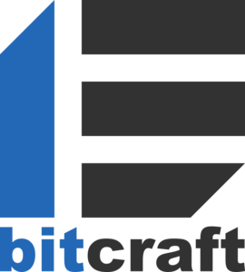

ビジネスソリューションコーナー https://www.bitcraft.co.jp/jp/
バックエンドサーバー開発の為に確固たる実績に基づくサーバーの開発とオペレーションサービスの充実で高水準のセキュリティ・安定性・拡張性を提供することをお約束いたします。デザインや開発の費用対効果を実現し、見通しの甘い技術選択への対策、ソフトウェアやハッカーへの適切な解決策をはかります。独自開発製品も多数。拡張性の高いweb管理ツールも手掛けており、クライアント側の開発にも力を入れております。